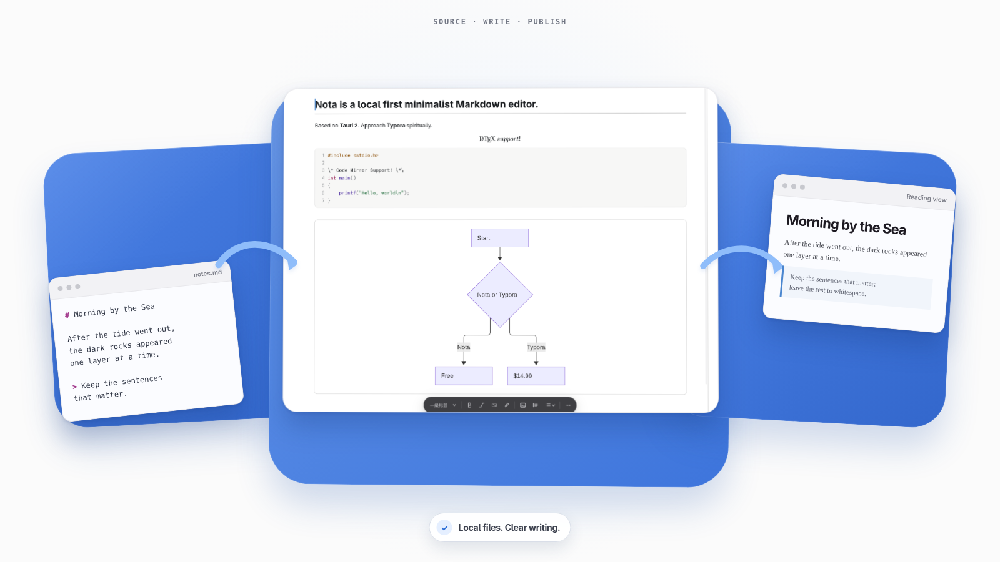
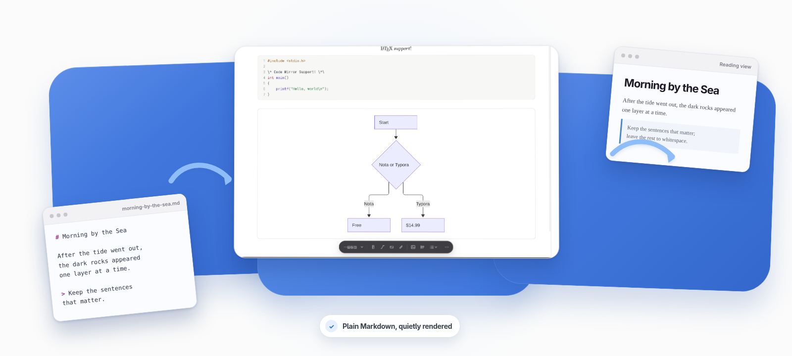
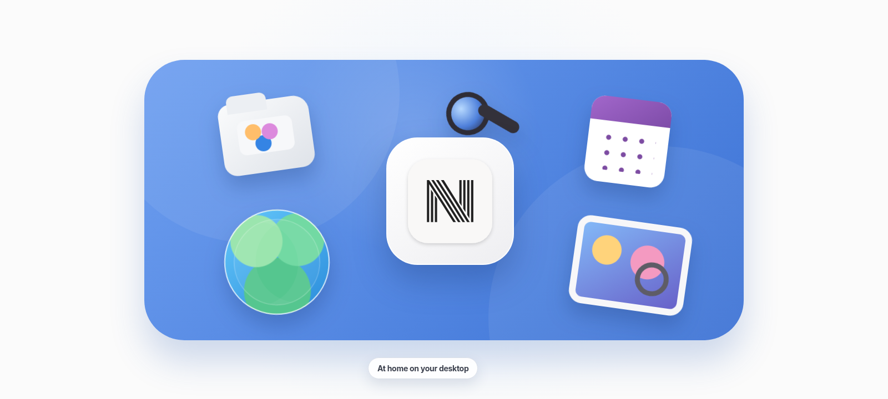

文件一直是你的
每份笔记都是普通 Markdown 文件。没有专有数据库，也没有无法带走的内容。

打开文件就开始写。格式在输入时出现，随后退回到安静的页面里； 不需要账号，也没有专有数据库。
坐下来，开始写
标题、强调、引用和代码都在输入时直接成形。文字仍然是普通的 Markdown， 随时可以交给任何工具继续处理。

为桌面而生
Nota 以原生窗口运行，直接读写本地文件；紧凑的 GNOME 风格工作台， 也可以换上一套与桌面相配的主题。

每份笔记都是普通 Markdown 文件。没有专有数据库，也没有无法带走的内容。
平时看到排版结果；需要修改时，标题、强调与代码的源码标记才安静出现。
原生窗口与本地文件读写。启动、切换文档和打开大文件不依赖浏览器标签页。
Nota Themes
界面主题改变工作台，文档主题改变纸面。两套主题都只由 CSS 与同目录资源组成，这里展示的是仓库中的实时主题。
查看完整主题目录 ↗最新版本
下载适用于你的安装包，或阅读文档后从源码构建。